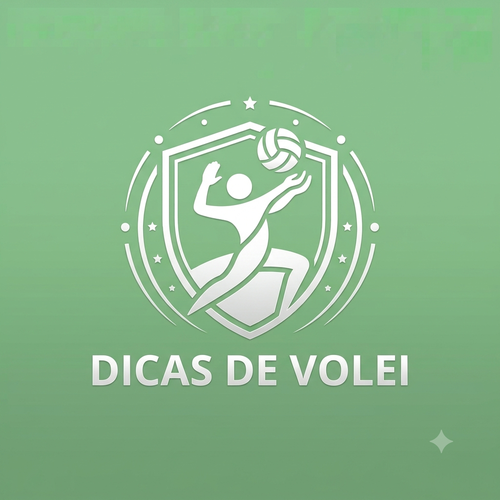

Por:Maria Rita
meu primeiro post!
. O Toque (Levantamento)
Formato das mãos: Mantenha as mãos acima da testa, formando um triângulo (ou o formato da bola) com os polegares e indicadores.
Use os dedos, não a palma: Amorteça e empurre a bola usando apenas as gemas dos dedos.
Impulso com o corpo: Use as pernas e os braços em um movimento fluido para dar força e precisão ao toque, esticando todo o corpo.